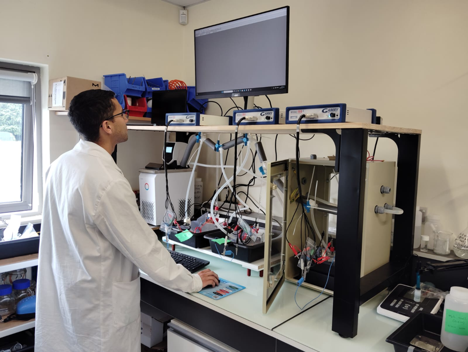
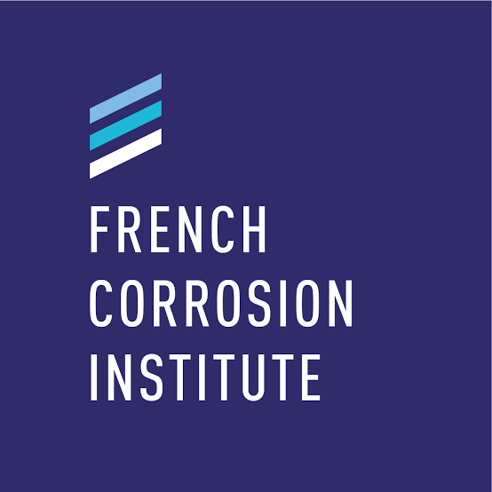
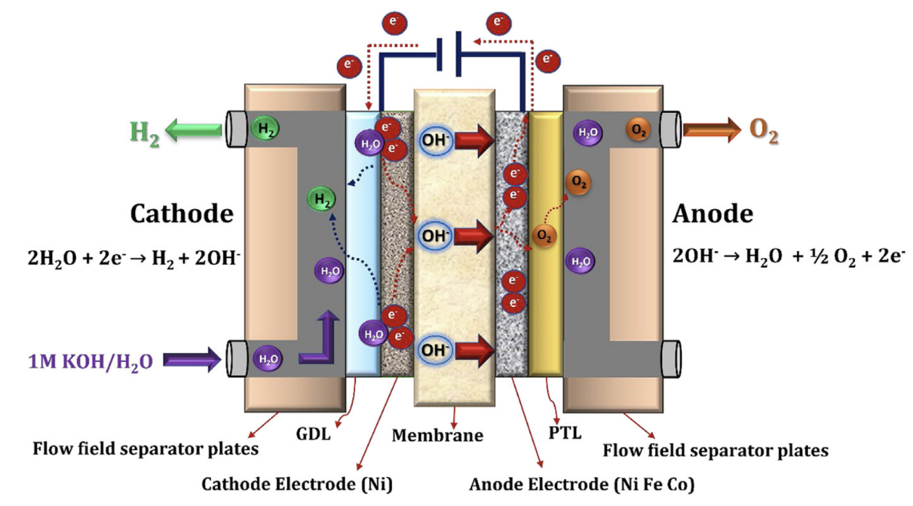
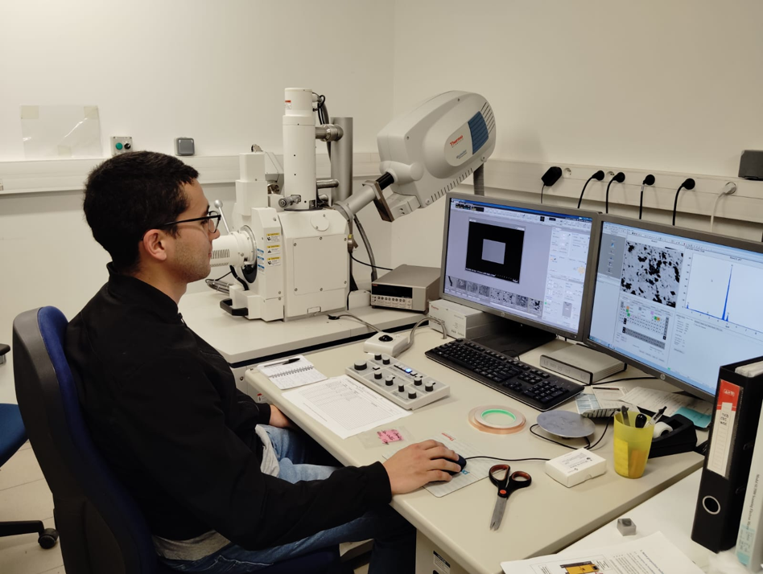
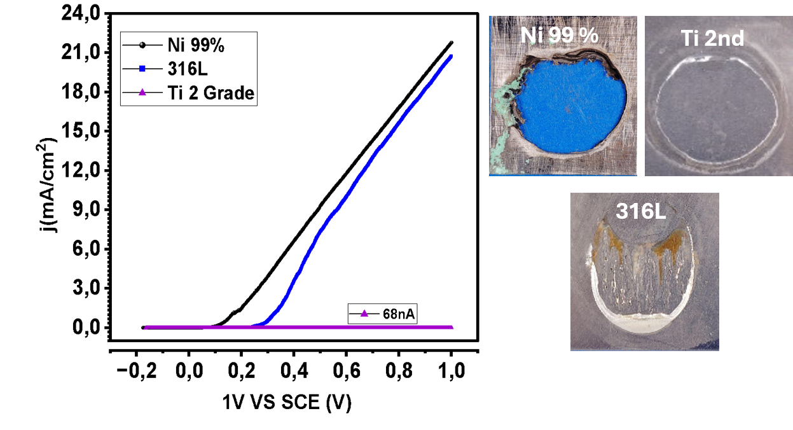
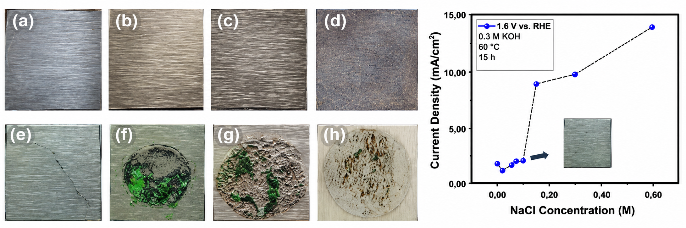
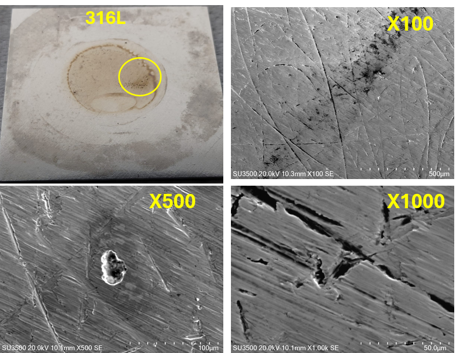
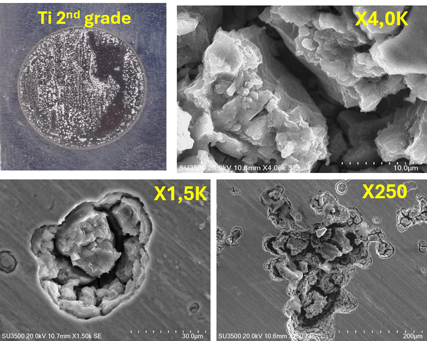

Corrosion Experiments
Prepared samples and carried out electrochemical measurements alongside my supervisor to study how candidate metals respond to alkaline, chloride-containing conditions.
Supporting experimental corrosion research and surface characterization of metallic components for next-generation hydrogen electrolyzers.
Institut de la Corrosion · Brest, France
European SWEETHY Project ·
WP5 — Corrosion Risk and Protection


Institut de la Corrosion01 / PROJECT OVERVIEW
Direct seawater electrolysis is being explored as a route to hydrogen production that could reduce dependence on purified freshwater. Anion exchange membrane (AEM) systems offer promising operating conditions, but seawater introduces a major materials challenge: chloride ions can accelerate corrosion and compromise the durability of metallic components.
Understanding how candidate metals respond to these environments is essential for selecting reliable components and informing future protective strategies.
Components must withstand aggressive operating conditions while maintaining the electrical and interfacial properties required for efficient electrolyzer operation.
02 / EUROPEAN RESEARCH FRAMEWORK
SWEETHY — Direct seawater electrolysis technology for distributed hydrogen production — brings together European research and industrial partners to advance AEM-based seawater electrolysis.
The corrosion research activities examine the durability of materials used in electrolyzer components and support the development of protection strategies for chloride-containing operating environments.
Explore the official SWEETHY website ↗Experimental corrosion assessment of candidate metallic materials for bipolar plates (BBP), porous transport layers (PTL), and current collectors (CCS).
Task-level scope; my individual responsibilities are described below.
SWEETHY is supported by the Clean Hydrogen Partnership and co-funded by the European Union under Grant Agreement No. 101192342.
03 / MY ROLE & CONTRIBUTION
Working alongside Sourav Bhowmick and under his direct supervision, I conducted electrochemical corrosion experiments as part of the SWEETHY research programme. My hands-on work included sample preparation, electrochemical measurements, post-test SEM/EDX characterization, and experimental data analysis.
Prepared samples and carried out electrochemical measurements alongside my supervisor to study how candidate metals respond to alkaline, chloride-containing conditions.
Examined tested surfaces using SEM/EDX to document localized damage and investigate changes in surface morphology and elemental composition.
Organized and analyzed experimental observations, compared material responses, and contributed results to the research team’s technical documentation.

04 / EXPERIMENTAL APPROACH
The research combined electrochemical measurements with post-test characterization to connect material behavior during testing with visible changes at the surface.
Prepare candidate metallic samples and test conditions.
Monitor material response under controlled polarization conditions.
Examine post-test surface morphology and elemental features.
Electrochemical assessment of Ni 99%, AISI 316L stainless steel, and Titanium Grade 2 under anodic operating conditions.

We tested Ni 99% at different NaCl concentrations to examine its response under anodic conditions. After 15 hours, higher chloride concentrations were associated with increased current density and more visible surface degradation.

Post-test SEM observations showed localized surface damage in both AISI 316L stainless steel and Titanium Grade 2 under the tested conditions. These images complement the electrochemical measurements.


05 / SCIENTIFIC DISSEMINATION
S. Bhowmick, J. F. Quintero Salinas, F. Vucko, A. Valencia Ramirez, F. Alcaide, N. Kazamer, U. W. Rost, and M. Prestat.
Co-authorship of a conference abstract describing collaborative research; not presented here as a peer-reviewed journal article.
View Conference Abstract (PDF)